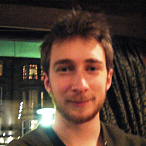

|
Since October 2016, I am a tenured researcher at the French National Center for Scientific Research (CNRS). I jointly work at the Complex Systems Institute of Paris Île-de-France (ISP-PIF, UPS 3611), directed by David Chavalarias, and the Computer Science Laboratory of Paris 6 (LIP6, UMR 7606), in the Complex Networks team directed by Clémence Magnien. I was before at the Max-Planck-Institute for Mathematics in the Sciences in Leipzig, Germany, in the research group of Jürgen Jost. Curriculum: download my curriculum (last update: October 2016) Mail: Robin ‹dot› Lamarche-Perrin ‹at› lip6 ‹dot› fr |
 |